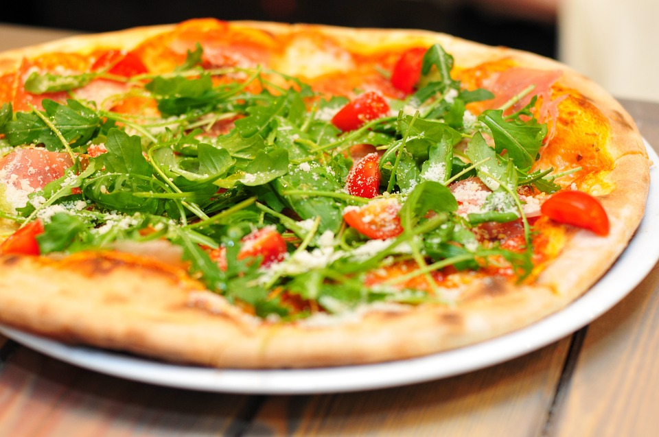

Mozarellapizza från Italien!
Smaka en god pizza med recept direkt från Italien. Pizzan är bakad i våra stenugnar på stenplattor i den
perfekta temperaturen, för att ge dig en god smakupplevelse.
Pris: 95:-
Kockens Blompizza!
Kom in och smaka våran huvudkocks favorit, Blomkvists Blompizza. Pizzan har en blomformad botten med mozzarella
i "Bladen".
Pris: 105:-

Kaninens Bladpizza!
Våran Kaninpizza är vårt vegetariska alternativ, med ett recept utvecklat tillsammans med vårat favorithusdjur, Kaninen.
Pizzan innehåller tomat, ost, bönor, och blad från spännande örter
Pris: 100:-
Öppettider
Mån-Fre: 09:00-23:00
Lör: 09:00-01:00
Sön: 10:00-22:00
Hitta närmaste resturang!